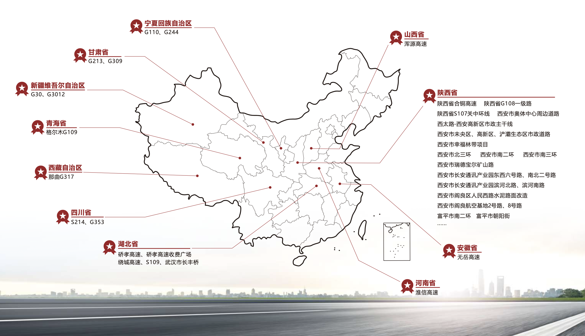

工程案例与合作企业
点击了解 更多工程合作案例 （湖北坦途高科）
天然沥青路用性能优 异，已在港珠澳大桥、矮寨大桥、首都机场、长安街、北京三环 线、上海虹桥机场等众多重点工程中采用。
湖北坦途高科有限责任公司作为世界首家从事工厂化稳定型天然沥青产品研发及生产的高新技术企业，布局全国，致力于低碳环保，高效节能的道路建筑材料及技术的 开发。公司逐年持续加大技术研发投入力度，紧跟国家“一带一路”战略步伐，合作完成工程案例包括：
* 陕西省：合铜高速公路，高新区市政主干线西太，省G108一级公路，S107关中环线
* 湖北省：硚孝高速公路，湖北武汉绕城高速公路，湖北硚孝高速公路广场，湖北武汉市政道路，武汉市长丰桥
* 西安：西安市区北三环，南二环，南三环,长安通讯产业园南北公路，未央区/高新区/浐灞生态区市政道路，幸福林带项目，瑞德宝尔矿山路，阎良航空基地2-8号路，阎良区人民西路水泥路面改造，富平市公路
* 一带一路沿线：宁夏回族自治区国道G110，G244高速公路，甘肃省国道G213，G309高速公路，新疆维吾尔自治区G30，G3012国道高速公路，青海省格尔木国道G109高速公路，西藏自治区那曲G317高速公路，四川省G353，S214高速公路
* 其他省市：山西省浑源高速公路，安徽省无岳高速公路，河南省淮信高速公路，四川省S214，G353高速公路
除以上工程合作案例外，坦途高科拥有占地70余亩的生产基地，一千余平米省级企业技术研究中心，申报专利百余项，已获得授权58项，在行业内合作企业单位1000余家。